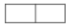

실내건축기능사 (2005-04-03 기출문제)
1과목: 실내디자인
1. 2인용 침대의 배치에 관한 설명 중 옳지 않은 것은 ?
- 침대의 배치는 출입문, 벽, 창의 위치를 고려해야 한다.
- 침대의 측면은 외벽에 닿는 것이 좋다.
- 가급적 창가에 배치하지 않는 것이 좋다.
- 출입문 개방시 직접 침대가 안 보이는 것이 좋다.
(정답률: 64%)

2. 실내 기본요소 중 일반적으로 접촉빈도가 가장 높은 곳은?
- 벽
- 바닥
- 천장
- 기둥
(정답률: 93%)
3. 실내디자인의 조건으로 가장 거리가 먼 것은?
- 인간생활을 위한 기능적 조건
- 인간의 서정적 욕구 해결을 위한 정서적 조건
- 시대적 유행을 고려하기 위한 유행적 조건
- 쾌적한 환경을 추구하기 위한 환경적 조건
(정답률: 79%)
4. 디자인 요소 중 균형에 속하지 않는 것은 ?
- 대칭
- 점층
- 주도
- 종속
(정답률: 35%)
5. 동선계획을 가장 잘 나타낼 수 있는 실내계획은?
- 입면계획
- 천정계획
- 배치계획
- 평면계획
(정답률: 86%)
6. 선의 디자인적 작용 중 가장 동적인 것은?
- 사선
- 수직선
- 수평선
- 포물선
(정답률: 40%)
7. 실내디자인에서 텍스처(Texture)란 ?
- 질감
- 목재의 성질
- 모델
- 균제
(정답률: 87%)
8. 실내 공간을 실제크기보다 넓어 보이게 하는 방법이 아닌것은 ?
- 창이나 문 등의 개구부를 크게 하여 시선이 연결되도록 계획한다.
- 큰 가구는 벽에서 떨어뜨려 배치한다.
- 크기가 작은 가구를 이용한다.
- 질감이 거친 것보다는 고운 것을 사용한다.
(정답률: 86%)
9. 실내디자인을 할 때에 동선을 가장 중요시해야 할 공간은 ?
- 공공공간
- 상업공간
- 업무공간
- 전시공간
(정답률: 39%)
10. 주택보다는 대형건물의 현관문으로 많이 사용되어 많은 사람들이 출입하기에 편리한 문은 ?
- 자재문
- 미닫이문
- 여닫이문
- 접이문
(정답률: 69%)
11. 천장면 가까이에 높이 위치한 창으로 주로 환기를 목적으로 설치하는 창은 ?
- 베이윈도우
- 양측창
- 편측창
- 고창
(정답률: 67%)
12. 직접조명 방식에 대한 설명으로 옳지 않은 것은?
- 먼지에 의한 감광이 적다.
- 자외선 조명을 할 수 있다.
- 조명 효율이 나쁘다.
- 집중적으로 밝게 할 때 유리하다.
(정답률: 68%)
13. 원룸 설계시 고려해야할 사항이 아닌 것은 ?
- 사용자에 대한 특성을 충분히 파악한다.
- 원룸이므로 활동공간과 취침공간을 구분하지 않아도 된다.
- 내부공간을 효과적으로 나누어 활용한다.
- 환기를 고려한 설계가 이루어져야 한다.
(정답률: 87%)
14. 모듈을 적용하기 위한 설계를 할 때 수평모듈과 수직모듈로 적당한 것은 ?
- 1M, 1M
- 2M, 2M
- 3M, 2M
- 5M, 3M
(정답률: 49%)
15. 다음 레스토랑의 공간구성 영역에 대한 내용 중 해당사항이 가장 적은 것은 ?
- 출입구 부분
- 영업 부분
- 관리 부분
- 조리 부분
(정답률: 45%)
16. 대기 중의 수증기 분압이 320mmHg이고, 기온에 대한 포화수증기 분압이 400mmHg이라면 상대습도는 얼마인가 ?
- 70%
- 80%
- 125%
- 135%
(정답률: 63%)
17. 홀의 음향 계획으로 옳지 않은 것은 ?
- 반사음을 한쪽으로 집중시킨다.
- 실내·외의 소음을 차단한다.
- 주파수에 따라 실내 마감재료를 조정한다.
- 실내의 음을 보강하는 설비를 한다.
(정답률: 69%)
18. 따뜻해진 공기는 위로 올라가고 차거워진 공기는 아래로 내려가는 현상을 무엇이라 하는가 ?
- 전도
- 열관류
- 복사
- 대류
(정답률: 82%)
19. 주방의 렌지 상부에 필요한 기계환기 방법은 ?
- 급기(給氣)환기
- 배기(排氣)환기
- 급배기(給排氣)환기
- 환기통
(정답률: 49%)
20. 다음 중 음영이 가장 강하게 나타나는 조명 방식은?
- 간접 조명
- 전반 확산 조명
- 직접 조명
- 반 간접 조명
(정답률: 73%)
2과목: 실내환경
21. 목재를 이음할 때 목재와 목재 사이에 끼워서 전단에 대한 저항 작용을 목적으로 한 철물은?
- 듀벨
- 클램프
- 꺽쇠
- 인서트
(정답률: 69%)
22. 집성목재에 대한 설명으로 옳은 것은?
- 소판이나 소각재의 부산물 등을 이용하여 접착, 접합에 의해 소요의 치수, 형상의 인공목재를 제조할 수 있다.
- 식물 섬유질을 주원료로 하여 이를 섬유화, 펄프화하여 성형, 성판한 것이다.
- 코르크나무 표피를 원료로 하여 분말된 것을 판형으로 열압한 것이다.
- 판을 섬유방향이 직교하도록 접착제로 붙여 만든 것이다.
(정답률: 45%)
23. 다음 석재에 대한 설명 중 옳지 않은 것은?
- 화강암 : 견고하고 대형재가 생산되므로 구조재로 사용이 가능하다.
- 안산암 : 성분이 복잡하므로 성분에 따라 색과 석질이 다르다.
- 대리석: 주성분은 탄산석회로 실내장식재, 조각재로 사용된다.
- 석회암 : 변성암의 일종으로 석질이 치밀하고 견고하여 건축용 석재로 많이 사용한다.
(정답률: 43%)
24. 점토벽돌에 관한 설명으로 적합하지 않은 것은? (KS규격)
- 1종 점토벽돌의 압축강도는 20.59N/mm2이상이다.
- 1종 점토벽돌의 흡수율은 25% 이하이다.
- 표준형 점토벽돌의 치수는 190㎜⒡90㎜⒡57㎜ 이다.
- 겉모양이 균일하고 사용상 해로운 균열이나 결함 등이 없어야 한다.
(정답률: 75%)
25. 타일에 대한 설명 중 틀린 것은?
- 크기에 따라 내장타일, 외장타일, 바닥타일로 분류할 수 있다.
- 모자이크타일은 자기질 타일이다.
- 보더 타일(boarder tile)은 특수형 타일로 가늘고 긴 모양이다.
- 타일은 내구성이 크고 흡수율이 작으며 경량, 내화, 형상과 색조의 자유로움 등이 우수한 특성이 있다.
(정답률: 53%)
26. 합판에 대한 설명 중 옳지 않은 것은?
- 함수율 변화에 의한 신축변형이 적다.
- 곡면가공을 하여도 균열이 생기지 않고 무늬도 일정하다.
- 2장 이상의 단판인 박판을 2, 4, 6매 등의 짝수로 섬유 방향이 직교하도록 붙여 만든 것이다.
- 표면가공법으로 흡음효과를 낼 수가 있고 의장적 효과도 높일 수 있다.
(정답률: 57%)
27. 건축 재료에 요구되는 성질에 대한 설명 중 옳지 않은 것은?
- 지붕재료는 열전도율이 작아야 한다.
- 창호재료는 내화ㆍ내구성이 큰 것이어야 한다.
- 구조재료는 외관이 좋은 것이어야 한다.
- 바닥재료는 탄력성이 있어야 한다.
(정답률: 75%)
28. 2장 또는 3장의 유리를 일정한 간격을 두고 둘레는 틀을 끼워 내부를 기밀하게 만든 것으로 방음, 방서, 단열 효과가 크고 결로방지용으로도 우수한 유리제품은?
- 망입유리
- 색유리
- 복층유리
- 자외선 흡수유리
(정답률: 78%)
29. 무늬결 나비 방향의 길이가 30cm인 목재판이 절건상태에서는 28cm일 때 전수축률은?
- 51.7%
- 43.3%
- 7.1%
- 6.7%
(정답률: 17%)
30. 무거운 자재 여닫이문에 주로 사용되며 문을 열면 저절로 닫혀지게 하는 창호 철물은?
- 레버터리 힌지
- 도어 스톱
- 크리센트
- 플로어 힌지
(정답률: 67%)
3과목: 실내건축재료
31. 목재의 강도에 대한 설명 중 틀린 것은?
- 압축강도는 응력의 방향이 섬유방향에 평행한 경우 최대가 된다.
- 변재가 심재보다 강도가 크다.
- 섬유포화점 이상에서는 강도가 일정하나 섬유포화점 이하에서는 함수율의 감소에 따라 강도가 증대한다.
- 목재에 옹이, 갈라짐 등의 흠이 있으면 강도가 저하된다.
(정답률: 66%)
32. 에폭시(epoxy)수지에 관한 설명으로 옳은 것은?
- 기본 수지는 점성이 아주 크므로 사용시에 희석제, 용제등을 섞지 않는다.
- 금속, 석재, 도자기, 유리, 콘크리트, 플라스틱재 등의 접착에 사용된다.
- 내화학성, 내약품성이 없다.
- 내수성은 우수하나 경화가 아주 늦다.
(정답률: 60%)
33. 보통포틀랜드시멘트의 일반적인 성질에 대한 설명 중 옳지 않은 것은?
- 비중은 제조 직후의 값이 가장 크다.
- 시멘트의 응결은 첨가석고의 질과 양, 온도 및 분말도 등의 영향, 시멘트 풍화의 정도에 따라 다르다.
- 분말이 미세할수록 수화작용이 늦고 강도도 낮다.
- 분말도의 시험은 체분석법, 피크노메타법, 브레인법 등이 있다.
(정답률: 65%)
34. 목재의 가공품 중 강당, 집회장 등의 음향조절용으로 사용되며 보통 두께 3cm, 넓이 10cm 정도의 긴판에 표면을 리브로 가공한 것은?
- 코르크 보오드(cork board)
- 코펜하겐 리브(copenhagen rib)
- 파키트리 블록(parquetry block)
- 집성목재(glue-laminated timber)
(정답률: 82%)
35. 알루미늄 창호의 특징으로서 맞지 않는 것은?
- 열팽창계수가 강의 약 2배정도이다.
- 알칼리성에 강하다.
- 공작이 자유롭고 기밀성이 좋다.
- 비중이 철의 약 1/3로서 경량이다.
(정답률: 61%)
36. 다음 석재 중 가장 내화성이 작은 것은?
- 사암
- 안산암
- 응회암
- 대리석
(정답률: 34%)
37. A.E 콘크리트(Air entrained Concrete)의 특성으로 옳지 않은 것은?
- 화학작용과 동결융해에 저항성이 크다.
- 미세기포에 의해 재료분리가 많이 생긴다.
- 공기량의 증가에 따라 압축강도는 감소한다.
- 표면이 평활하여 제치장 콘크리트에 적당하다.
(정답률: 31%)
38. 다음 중 점토제품이 아닌 것은?
- 테라코타
- 토관
- 위생도기
- 트래버틴
(정답률: 57%)
39. 코너 비드(corner-bead)에 대한 설명으로 옳은 것은?
- 강철, 금속재의 콘크리트용 거푸집으로 특히 치장콘크리트에 많이 쓰임
- 계단 모서리 끝 부분의 보강 및 미끄럼막이를 목적으로 대는 것
- 콘크리트 타설 후 달대를 매달기 위해 사전에 매설시키는 부품
- 벽ㆍ기둥 등의 모서리를 보호하기 위하여 미장바름질을 할 때 붙이는 보호용 철물
(정답률: 72%)
40. 금속의 부식 방지대책에 대한 설명 중 옳지 않은 것은?
- 큰 변형을 준 것은 가능한 한 풀림하여 사용한다.
- 부분적으로 녹이 나면 즉시 제거한다.
- 다른 종류의 금속을 서로 인접, 접촉시켜 사용한다.
- 표면을 깨끗하게 하고 물기나 습기가 없게 한다.
(정답률: 82%)
41. 쪽매의 종류에서 딴혀쪽매의 그림으로 맞는 것은?

(정답률: 49%)
42. 도면표시기호 중 반지름을 나타내는 기호는?
- A
- D
- THK
- R
(정답률: 73%)
43. 벽돌구조의 아치에 대한 설명으로 적당하지 않은 것은?
- 아치는 수직 압력을 분산하여 부재의 하부에 인장력이 생기지 않도록 한 구조이다.
- 창문의 너비가 1m 정도일 때 평아치로 할 수 있다.
- 문꼴 나비가 1.8m 이상으로 집중하중이 생길 때에는 인방보로 보강한다.
- 본아치는 보통 벽돌을 사용하여 줄눈을 쐐기 모양으로 만든 것이다.
(정답률: 46%)
44. 다음 각 구조에 대한 설명 중 틀린 것은?
- 철근콘크리트구조는 대부분 습식구조이다.
- 목구조는 대부분 건식구조이다.
- 철골구조는 가구식구조이다.
- 조적구조는 일체식구조이다.
(정답률: 59%)
45. 다음중 도학을 이용하지 않고 45°와 60°삼각자의 2개 1조로 그을 수 있는 빗금의 각도가 아닌 것은?
- 30°
- 50°
- 75°
- 1⑤°
(정답률: 59%)
46. 벽돌의 종류 중 특수벽돌에 속하지 않는 것은?
- 붉은벽돌
- 경량벽돌
- 이형벽돌
- 내화벽돌
(정답률: 74%)
47. 다음 중 표준형 벽돌 2.0B 쌓기의 두께는? (공간쌓기 아님)
- 90㎜
- 190㎜
- 290㎜
- 390㎜
(정답률: 43%)
48. 다음 중 도면에 일반적으로 사용되는 축척의 연결이 가장 옳지 않은 것은?
- 배치도 : 1/100∼1/500 정도
- 평면도 : 1/50∼1/200 정도
- 입면도 : 1/50∼1/200 정도
- 단면도 : 1/300∼1/500 정도
(정답률: 35%)
49. 리벳의 직경이 30mm일 때 리벳 구멍의 직경은?
- 31.0mm
- 31.5mm
- 32.0mm
- 32.5mm
(정답률: 44%)
50. 리벳치기에 있어서 피치(pitch)는 최소 얼마 이상으로 하는가?
- 리벳 지름의 1.25배
- 리벳 지름의 2.0배
- 리벳 지름의 2.5배
- 리벳 지름의 3.0배
(정답률: 28%)
4과목: 건축일반
51. 다음 중 보, 도리 등에서 오는 하중을 받아 기초에 전달하는 수직재는?
- 바닥
- 기둥
- 지붕
- 토대
(정답률: 75%)
52. 나무구조에서 가새에 대한 설명 중 적합하지 않은 것은?
- 목조벽체를 수평력에 견디게 하고 안정한 구조로 하기위한 것이다.
- 네모구조를 세모구조로 만들어 준다.
- 버팀대보다는 강력하고 또 간단히 그 목적을 이룰 수 있다.
- 가새의 경사는 90˚에 가까울수록 유리하다.
(정답률: 72%)
53. 웨브 플레이트의 좌굴을 방지하기 위하여 설치하는 것은?
- 앵커 볼트
- 베이스 플레이트
- 스티프너
- 플랜지
(정답률: 73%)
54. 도면의 크기와 표제란에 관한 설명 중 틀린 것은?
- 제도용지의 크기는 번호가 커짐에 따라 작아진다.
- A0의 넓이는 약 1m2이다.
- 큰 도면을 접을 때는 A4의 크기로 접는 것이 원칙이다.
- 표제란은 도면 왼쪽 위 모서리에 표시하는 것이 원칙이다.
(정답률: 61%)
55. 다음 중 줄눈이 만들어지며 지진과 바람과 같은 횡력에 약하고 균열이 생기기 쉬운 구조는?
- 목구조
- 철근콘크리트구조
- 벽돌구조
- 철골구조
(정답률: 70%)
56. 내구성, 내화성, 내진성이 우수하고 거주성이 뛰어나지만, 자중이 무겁고 시공 과정이 복잡하며, 공사 기간이 긴 단점이 있는 구조는?
- 철근콘크리트구조
- 목구조
- 석구조
- 블록구조
(정답률: 77%)
57. 일반적인 벽돌쌓기 방법에 대한 설명으로 옳지 않은 것은?
- 영식 쌓기는 처음 한 켜는 마구리쌓기, 다음 한 켜는 길이쌓기를 교대로 쌓는 것으로 통줄눈이 생기지 않는 다.
- 네덜란드식 쌓기는 영국식과 같으나 모서리 끝에 이오토막을 사용한다.
- 프랑스식 쌓기는 부분적으로 통줄눈이 생기므로 구조벽체로는 부적합하다.
- 미식 쌓기는 구조적으로 약해 치장용 벽돌쌓기법에 이용된다.
(정답률: 37%)
58. 제도용지의 세로와 가로의 길이비로 옳은 것은?
- 1:1
- 1:㎼2
- 1:㎼3
- 1:㎼4
(정답률: 59%)
59. 건축설계도면에서 전개도에 관한 설명 중 틀린 것은?
- 각 실 내부의 의장을 명시하기 위해 작성하는 도면이다
- 각 실에 대하여 벽체 및 문의 모양을 그려야 한다.
- 축척은 1/200 정도로 한다.
- 벽면의 마감재료 및 치수를 기입하고, 창호의 종류와 치수를 기입한다.
(정답률: 40%)
60. 블록구조에 대한 설명 중 옳지 않은 것은?
- 조적식 블록조에서 세로줄눈은 특별한 경우를 제외하고 통줄눈으로 한다.
- 블록구조는 지진과 같은 수평력에 약하지만, 보강 철근을 사용하면 수평력에 견딜 수 있는 힘이 증가한다.
- 블록은 중공부의 경사에 의한 살 두께가 두꺼운 쪽을 위로 가게 쌓는다.
- 장막벽 블록조는 뼈대를 철근콘크리트구조나 철골구조로 하고 칸막이벽으로서 블록을 쌓는 방식이다.
(정답률: 37%)
침대의 측면이 외벽에 닿는 것이 좋은 이유는 바로 벽과의 접촉으로 인한 안정성과 벽면으로부터의 보온성이 높아지기 때문입니다. 따라서 침대를 배치할 때는 가능하면 외벽에 가까운 위치에 놓는 것이 좋습니다.
출입문 개방시 직접 침대가 안 보이는 것이 좋다는 설명은 개인적인 취향에 따라 다를 수 있으며, 침대의 안정성과 보온성과는 직접적인 연관성이 없습니다. 따라서 이 설명은 옳지 않습니다.